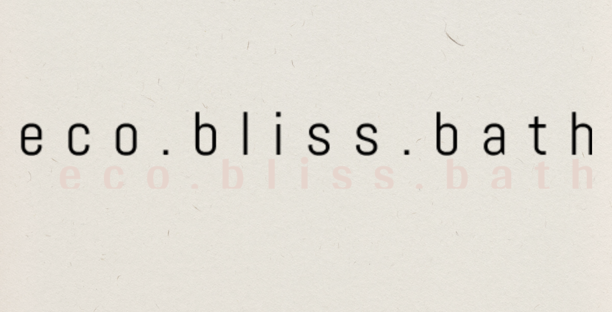

Formation Testeur Logiciel — OpenClassrooms
Votre équipe QA manque d'un testeur junior motivé
Étapes pour reproduire :
1. Ouvrir ce portfolio 2. Constater 9 mois de formation QA intensive + un parcours terrain qui a forgé la rigueur 3. Résoudre le ticket en me contactant.
RÉSOUDRE CE TICKET →
assigné à : vous
🧪 EXPÉRIENCES
Technicien Atelier — Décathlon
Bâtiment — métiers techniques exigeants
🚀 PROJETS — ÉTUDES DE CAS

MB-005
PASSED ✓
Eco Bliss Bath
Campagne Cypress complète : API REST, tests fonctionnels, anomalies XSS & panier détectées et documentées.
→ Voir sur GitHub

MB-006
SHIPPED ✓
Kasa
Application React responsive : routing, composants réutilisables. Côté dev, pour mieux comprendre ce que je teste.
→ Voir sur GitHub
MB-007
LIVRÉ ✓
TOMSEN
Stratégie de test d'une application bancaire : revue des exigences, stratégie, cas de test et compte rendu.
⬇ Télécharger le dossier de test (.zip)
🧰 STACK & OUTILS
✓Cypress
✓Jira
✓Notion
✓Postman
✓Git / GitHub
✓Docker
✓JS / React
✓SQL
✓☕ Café